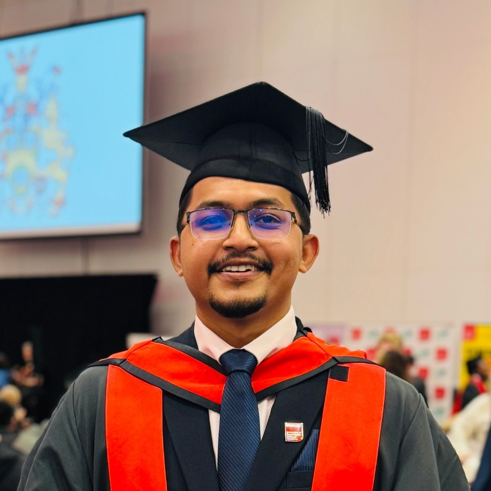
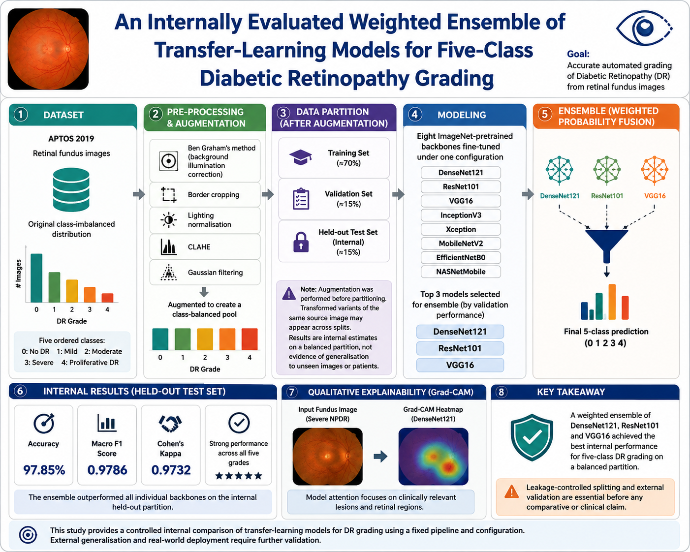

AKSoftware Developer in London building with Java (Spring Boot), Flutter, Python and REST APIs — MSc Computer Science (Distinction), with a delivery background that ships software all the way to production.
I'm a software developer with an MSc in Computer Science (Distinction) from the University of South Wales and a BSc in Software Engineering, combining hands-on development across Java (Spring Boot), Flutter, Python, SQL and REST-based APIs with a strong grounding in requirements analysis, API contract review and Agile delivery.
I've worked across the full SDLC — backend microservice development, feature implementation, unit testing, code review and stakeholder collaboration — progressing from Junior Software Developer to Software Engineer roles. For my MSc dissertation I built a complete Python computer-vision/ML pipeline that reached ~97% test accuracy.
I'm comfortable with third-party API integrations, JSON/XML data interchange and database-driven applications — and keen to apply that mix of engineering and delivery experience to building secure, scalable booking and B2B travel technology platforms.

view first page ↗I'm available full-time, on-site in London. Whether it's a role, a project or just a chat about travel tech, my inbox is open.